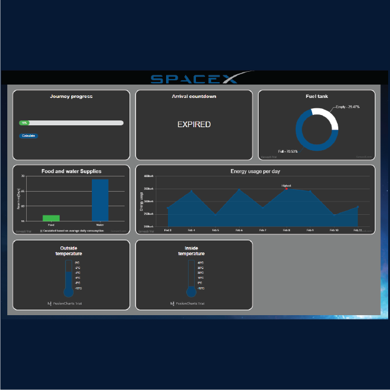

Voor dit project heb ik twee verschillende websites gemaakt. Ik heb door het maken van deze webstites verschillende technieken geleerd op websites te developen. De eerste website is een analoge klok. Deze klok is gemaakt in javascript en de achtergrond veranderd aan de hand van tijd van de dag. De website is hier te zien.
De tweede webssie is een dashboard die tijdens een reis met spaceX op een scherm vertoond kan worden. Het dashboard is doormiddel van CSS grids responsive gemaakt. Ook zijn alle tabellen en grafieken op het dashboard interactief. De website is hier te zien.
